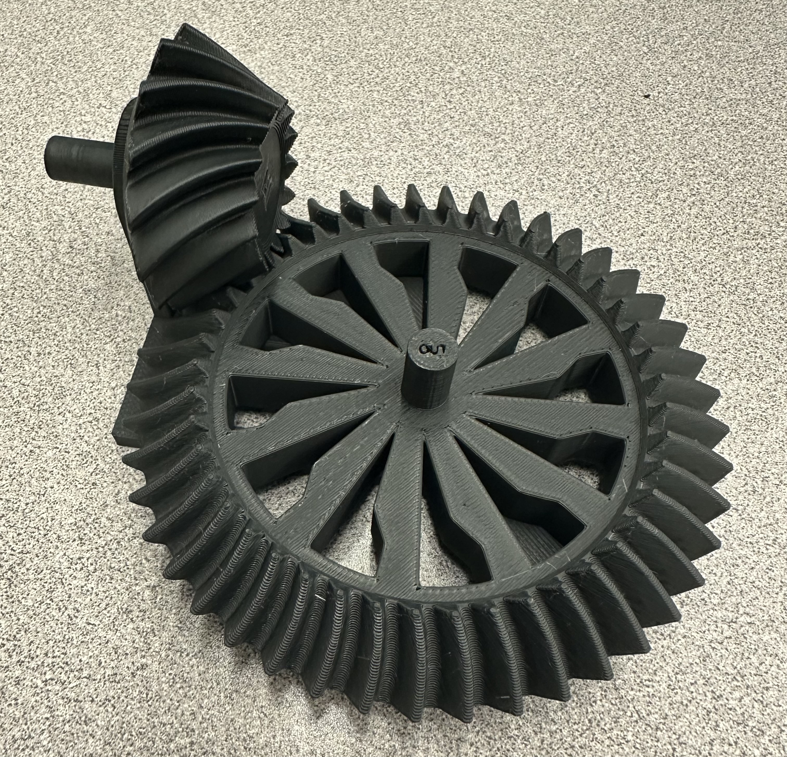

<!DOCTYPE html>
<html lang="en">
<head>
    <meta charset="UTF-8">
    <meta name="viewport" content="width=device-width, initial-scale=1.0">
    <title>My Portfolio</title>
    <link rel="stylesheet" href="css/style.css">
</head>
<body>
    <!-- Your content -->
    <script src="js/script.js"></script>
</body>
</html>

<!DOCTYPE html>
<html lang="en">
<head>
    <meta charset="UTF-8">
    <meta name="viewport" content="width=device-width, initial-scale=1.0">
    <title>My Portfolio</title>
    <link rel="stylesheet" href="css/style.css">
</head>
<body>
    <!-- Header Section -->
    <header>
        <h1>Jili You</h1>
        <nav>
            <a href="#about">About</a>
            <a href="#projects">Projects</a>
            <a href="#skills">Skills</a>
            <a href="#contact">Contact</a>
        </nav>
    </header>

    <!-- About Section -->
    <section id="about">
        <h2>About Me</h2>
        <p>Hello! I am a second-year mechanical engineering student at University of Toronto. I have a strong passion for machine learning and automotive design.
             I enjoy applying technical knowledge and problem-solving skills to solve real-life problems. Through my projects both in and outside class,
             I have gained proficiency in Python, Pytorch and Solidworks. I am looking forward to applying my skills and passion to contribute to pioneering projects and 
             innovations in engineering design. </p>
    </section>
    <!-- project section -->
    <section id="projects">
        <h1>Projects</h1>
        <div class="slideshow-container">
            <!-- Project 1 -->
            <div class="slide">
                
                <div class="description">
                    <h2>Image Recognition Using CNNs</h2>
                    <p>This project showcases a convolutional neural network built using Pytorch. The model is trained on Fashion-MNIST, a pre-built 
                        dataset consisting of 70,000 images of different clothing categories such as shoes, dress and pants. Three different architectures were implemented 
                        and image recognition accuracy was compared across the models. Among all the neural network archtectures implemented, the TinyVGG achieved the 
                        highest accuracy.  
                    </p>
                </div>
            </div>
            <!-- Project 2 -->
            <div class="slide">
                
                <div class="description">
                    <h2>Object Detection Using Faster R-CNN</h2>
                    <p>I developed a computer vision model for hot dog detection in images using Pytorch implementing the Faster R-CNN architecture.
                        The model was trained on a custom dataset in COCO format that recorded the positions of the hotdogs. The model demonstrated robust performance 
                        across various precision measuring metrics, highlighting its ability to detect hot dogs in different scenarios and its potential for further implication.</p>
                </div>
            </div>
            <!-- Project 3 -->
            <div class="slide">
                
                <div class="description">
                    <h2>Steering Wheel CAD</h2>
                    <p>As a member of University of Toronto Super Milage design team, I cadded the steering wheel for the 2023 Urban Concept car using Solidworks.</p>
                </div>
            </div>
            <!-- Project 4 -->
            <div class="slide">
                
                <div class="description">
                    <h2>Basic Machining Course</h2>
                    <p>To grasp a better understanding of machining techniques, I participated in a course at George Brown College. In this course, I learned how to use
                        a mill, a drill press, and a lathe. Using the knowledge we learned, I machined a single piston with a functional slider crank. The piston is capable of 
                        operating by feeding compressed air into the block.
                    </p>
                </div>
            </div>
            <!-- Project 5 -->
            <div class="slide">
                
                <div class="description">
                    <h2>3D Printed Gearbox</h2>
                    <p>In the MIE 243 dissection, I collaborated with 2 other classmates to design and 3D print a right-angle gearbox with a reduction speed of 3:1. An offset is introduced 
                        between the input and output shaft by using a Hypoid gear. In testing, the gearbox is able to perform perfectly both by hand an by an electrical drill. </p>
                </div>
            </div>
            <!-- Project 6 -->
            <div class="slide">
                
                <div class="description">
                    <h2>Portfolio Website</h2>
                    <p>I built a website from scratch by writing custom HTML, CSS, and JavaScript code. The website is then launched through GitHub for public access. The website serves as a platform 
                        for my work, offering visitors an interactive and engaging experience to explore my engineering projects, technical skills, and professional interests.
                    </p>
                </div>
            </div>
             <!-- Project 7 -->
            <div class="slide">
                
                <div class="description">
                    <h2>CNC Router design</h2>
                    <p>In the MIE 243 project, I collaborated with 3 other classmates to design a custom CNC router specifically for hobbyists, focusing
                         on precision machining and versatility for various creative applications. The design balances affordability with performance, featuring a 6060
                        aluminum frame for durability, stepper motors to ensure smooth operation, and a aluminum spindle plate to enhance stability
                        and minimize vibrations.This project highlights my ability to apply mechanical engineering concepts, CAD modeling, and problem-solving skills to develop practical and
                        efficient mechanical systems tailored for hobbyist use. </p>
                </div>
            </div> 
            <!-- Navigation Buttons -->
            <a class="prev" onclick="changeSlide(-1)">&#10094;</a>
            <a class="next" onclick="changeSlide(1)">&#10095;</a>
        </div>
    </section>
    
    <!-- Skills Section -->
    <section id="skills">
        <h2>Skills</h2>
        <div class="skills-container">
            
            
            
            
            
            <!-- Add other logos -->
        </div>
    </section>
    

    <!-- Contact Section -->
    <section id="contact">
        <h2>Contact</h2>
        <div class="contact-icons">
            <span class="email-container">
                
                <span id="email-text" style="display: none;">jili.you@mail.utoronto.ca</span>
            </span>
            <a href="https://github.com/to0ommy" target="_blank">
                
            </a>
        </div>
    </section>
    
    
    <!-- Footer -->
    <footer>
        <p>© 2024 [Jili You]. All rights reserved.</p>
    </footer>
</body>
</html>

